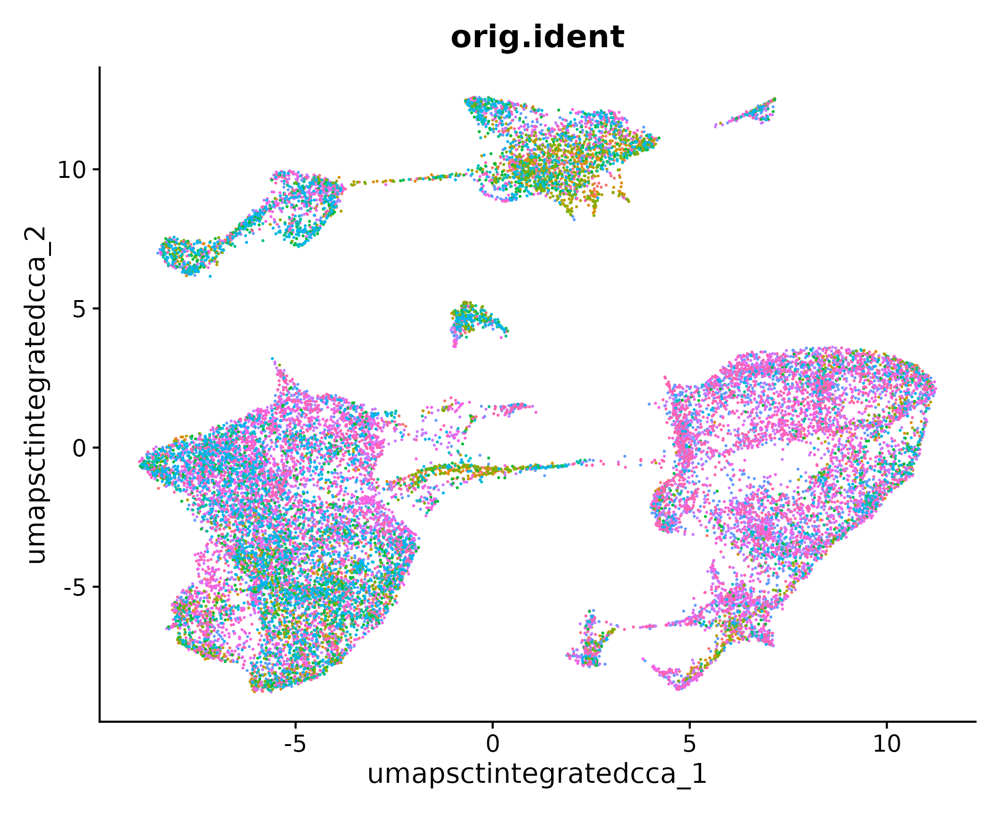
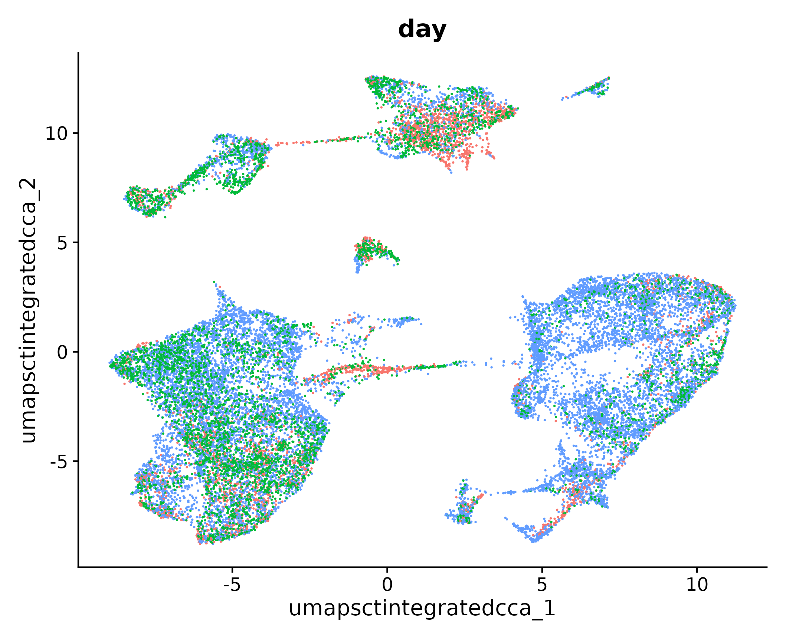
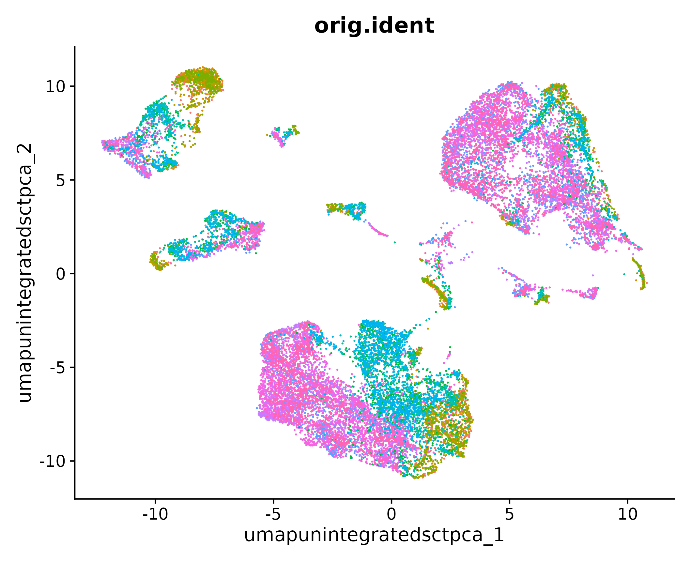
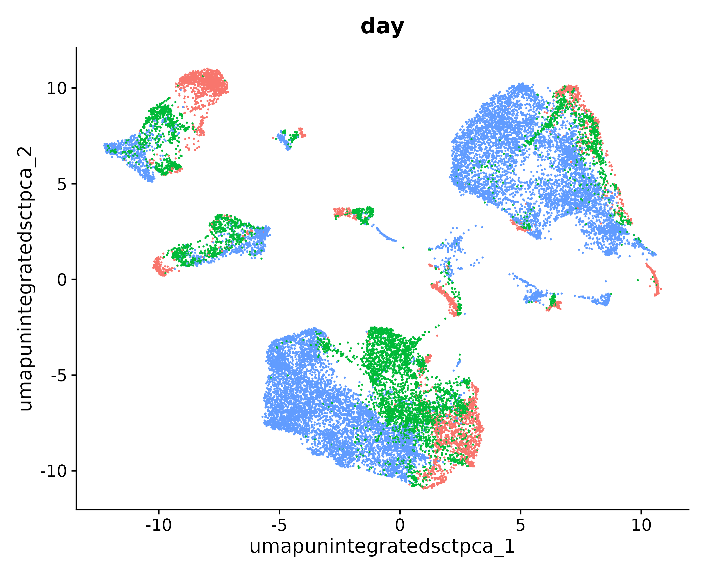

Workflow Overview

Objectives
- Normalize the counts.
- Perform dimension reduction and determine number of PCs to
keep.
- Understand when integration of samples might be needed.
- Execute integration of samples, and evaluate if it was
“successful”.
- Discuss different integration techniques offered in Seurat v5.
Introduction
For larger scRNA-seq projects, data may unavoidably by generated
across multiple batches. As with bulk RNA-seq, some steps during library
preparation can be taken to avoid confounding batch effects with
biological variables of interest. But it will remain necessary to
correct for technical variation in the sample integration step.
In this section, we will demonstrate the steps to evaluate whether
integration is needed (it usually is), and will walk through integrating
the data and evaluating the effectiveness thereof.
Like in the previous section, one integration method might be
reported in a research paper but several options might have been tested
before determining which approach sufficiently corrected batch effects
without removing expected biological variability.
Normalization
As with bulk RNA-seq, differences in sequencing depth is a
contributing factor to technical variation in single-cell RNA-seq data.
Moreover, variance stabilization in gene counts can greatly improve
downstream analysis steps. Regardless of whether or not scRNA-seq data
is to be integrated, it is important to normalize the count data.
Here we will use the SCTransform() method that is part
of the Seurat package. This
manuscript describes the initial approach, and this
updated manuscript describes the v2 version of
SCTransform().
Other
normalizations
From the Seurat documentation, the SCTransform()
function “replaces NormalizeData(),
ScaleData(), and FindVariableFeatures()”. You
may see these three commands in other vignettes, indeed even in other
Seurat vignettes (source).
As we discussed when describing the structure of a
Seurat object, the assay data is stored in layers. To
conform to this convention, we will run the following command, which
splits the “RNA” assay into a list of samples, each with its own
layers.
geo_so[['RNA']] = split(geo_so[['RNA']], f = geo_so$orig.ident)
We will now run SCTransform(), which will result in a
new assay, the SCT assay.
geo_so = SCTransform(geo_so)
And we can see the additional assay by viewing the
geo_so object:
geo_so
An object of class Seurat
38503 features across 22320 samples within 2 assays
Active assay: SCT (17129 features, 3000 variable features)
3 layers present: counts, data, scale.data
1 other assay present: RNA
Regressing out sources of variation
In the SCTransform() function there is a parameter,
vars.to.regress, which allows us to regress out sources of
variation that we don’t want to play a role in downstream analyses. A
common variable to regress out is percent.mt.
We observe at this point that SCTransform() performed
its normalization and variable feature identification for each batch
independently, and a consensus set of variable features is automatically
identified for later use (source).
We also note that within the “SCT” assay, the counts
layer contains the corrected counts, the data layer
contains the log(1 + counts), and the scale.data layer
contains the pearson residuals from the SCT models.
Dimension reduction
In our data, we have seen our 12 samples contain 1K - 3K cells each,
with measurements across 21K genes. One of our ultimate goals is to
cluster the cells according to their expression profiles, and determine
what cell types correspond to these clusters for the purposes of
differential expression between clusters and/or between conditions
within clusters.
If we only had two genes, we would make a two-dimensional plot where
each axis is the expression of a gene, and each point represents a cell.
We could use the Euclidean distances to determine cells that were more
similar to each other than others. But as we’ve observed, our data
contains 21K genes, which doesn’t immediately lend itself to a
two-dimensional plot.
Dimension reduction helps us reduce the number of separate dimensions
by grouping multiple features into a single dimension. This makes
downstream analyses like nearest neighbor finding and clustering more
computationally feasible.
Principal component analysis
Principal component analysis (PCA) determines axes in
high-dimensional space that capture the most variation. By definition,
the PCs capture the greatest factors of heterogeneity in the data set,
and we can use the top PCs to approximate the full data set in
downstream analysis.
Here we’re assuming that biological processes affect multiple genes
in a coordinated way. Therefore the top PCs likely represent biological
structure rather than random tehcnical or biological noise, which
affects each gene independently [(source)[https://bioconductor.org/books/3.12/OSCA/dimensionality-reduction.html#principal-components-analysis]].
Let’s run PCA on the SCT normalized assay. We will name the reduction
in an informative way to keep them clear for us in the future. In this
case, our data has not yet been integrated, but it has been SCT
normalized. So we will name the reduction
unintegrated.sct.pca. Note that SCTTransform()
returned a set of highly variable genes, and the RunPCA()
function will use this subset to determine the PCs and genes associated
therewith.
geo_so = RunPCA(geo_so, reduction.name = 'unintegrated.sct.pca')
In the console, the first 5 PCs are listed along with the associated
genes. If we look at the geo_so object, we’ll see our
dimension reduction:
geo_so
An object of class Seurat
38503 features across 22320 samples within 2 assays
Active assay: SCT (17129 features, 3000 variable features)
3 layers present: counts, data, scale.data
1 other assay present: RNA
1 dimensional reductions calculated: unintegrated.sct.pca
Choosing the number of PCs
For downstream analysis, we need to make the decision of how many PCs
to include. The trade-off is that including more PCs includes more of
the biological signal but at the cost of including more technical
variation. One way to determine how many PCs to include is by looking at
an elbow plot, which shows the percent variance explained by successive
PCs.
ElbowPlot(geo_so, ndims = 50, reduction = 'unintegrated.sct.pca')
ggsave(filename = 'ISC_R/results/figures/qc_sct_elbow_plot.png')
In this plot, we could arbitrarily choose a number along the x-axis
that looks like a sharp change in the variance from one PC to the next,
that is, an elbow. Of course, the choice is not always obvious, and this
plot is no different. We could also quantify our choice a bit with a
helpful function:
# Function to determine optimal PCs after RunPCA(). Thanks Dana!
optimal_pcs = function(so, reduction) {
# quantitative check for number of PCs to include
pct = so@reductions[[reduction]]@stdev / sum(so@reductions[[reduction]]@stdev) * 100
cum = cumsum(pct)
co1 = which(cum > 90 & pct < 5)[1]
co2 = sort(which((pct[1:length(pct)-1] - pct[2:length(pct)]) > .1), decreasing = T)[1] + 1
pcs = min(co1, co2)
return(pcs)
}
This function takes in a Seurat object and the name of a
reduction. It then determines two quantities:
- At which PC is 90% of the variation cumulatively explained, while
also explaining <5% itself?
- Where is the last difference in variation explained from one PC to
the next greater than 0.1?
Of these two, the minimum number can be selected as the “elbow” in
the plot. In our case, that number is 23, which we can round up to 25
for good measure.
optimal_pcs(geo_so, 'unintegrated.sct.pca')
23
Integrate Layers
Having normalized the data with SCTransform() and
performed the dimension reduction with RunPCA(), we are now
able to run IntegrateLayers():
geo_so = IntegrateLayers(
object = geo_so,
method = CCAIntegration,
orig.reduction = 'unintegrated.sct.pca',
normalization.method = 'SCT',
new.reduction = 'integrated.sct.cca')
Note we have specified the unintegrated reduction
unintegrated.sct.pca, which is what
IntegrateLayers() operates on, along with the
SCT assay. Let’s take a look to see what’s different about
the Seurat object:
geo_so
An object of class Seurat
38503 features across 22320 samples within 2 assays
Active assay: SCT (17129 features, 3000 variable features)
3 layers present: counts, data, scale.data
1 other assay present: RNA
2 dimensional reductions calculated: unintegrated.sct.pca, integrated.sct.cca
Observe that we now have a new reduction,
integrated.sct.cca, which we will use downstream.
Alternate integration methods
New to Seurat v5 is the improved IntegrateLayers()
function which makes selecting different integration methods much
easier. The results of each alternative integration method are stored
within the same Seurat object to make comparing downstream
effects much easier. This
Seurat vignette on integrative analysis in Seurat v5 provides examples
of each integration method. Note, that the code in this vignette assumes
the
NormalizeData() > ScaleData() > FindVariableFeatures()
pipeline was used. So, for example, if we wanted to run the slightly
faster RPCAIntegration method, we would run:
geo_so = IntegrateLayers(
object = geo_so,
method = RPCAIntegration,
orig.reduction = 'unintegrated.sct.pca',
normalization.method = 'SCT',
new.reduction = 'integrated.sct.rpca')
Note the sepcification of normalization.method = 'SCT'
is different than the vignette.
Move to later sections?
We now run
FindNeighbors() > FindClusters() > RunUMAP() for the
new reduction integrated.sct.cca:
geo_so = FindNeighbors(geo_so, dims = 1:25, reduction = 'integrated.sct.cca')
geo_so = FindClusters(geo_so, resolution = 1, cluster.name = 'integrated.sct.cca.clusters')
geo_so = RunUMAP(geo_so, dims = 1:25, reduction = 'integrated.sct.cca', reduction.name = 'umap.sct.integrated.cca')
Which sets us up to see the UMAP and evaluate whether we’ve reduced
the condition effect on the cluster membership.
post_integration_umap_plot_orig.ident = DimPlot(geo_so, group.by = 'orig.ident', label = FALSE, reduction = 'umap.sct.integrated.cca') + NoLegend()
ggsave(filename = 'ISC_R/results/figures/umap_integrated_sct_orig.ident.png', plot = post_integration_umap_plot_orig.ident)

post_integration_umap_plot_day = DimPlot(geo_so, group.by = 'day', label = FALSE, reduction = 'umap.sct.integrated.cca') + NoLegend()
ggsave(filename = 'ISC_R/results/figures/umap_integrated_sct_day.png', plot = post_integration_umap_plot_day)

Indeed, it looks like we’ve succeeded in reducing the effect of
condition on cluster membership by integrating the data.
Rewind: Pre-integration evaluation
Prior to integration, we would like to know if there are any batch
effects that carry through to the cell clusters. Most importantly, we
would like to know if clusters tend to be determined by sample or
condition (in this case, the day). In order to figure this out we have
already run the following three commands, which we will describe in more
detail later.
# DefaultAssay(geo_so) = 'RNA'
geo_so = RunPCA(geo_so, reduction.name = 'unintegrated.sct.pca')
geo_so = FindNeighbors(geo_so, dims = 1:25, reduction = 'unintegrated.sct.pca')
geo_so = FindClusters(geo_so, resolution = 0.5, cluster.name = 'unintegrated.sct.clusters')
geo_so = RunUMAP(geo_so, dims = 1:25, reduction = 'unintegrated.sct.pca', reduction.name = 'umap.unintegrated.sct.pca')
After running these commands, we can visualize the cells in a UMAP
plot, which projects the high-dimensional gene expression into two
dimensions.
pre_integration_umap_plot = DimPlot(geo_so, group.by = 'orig.ident', label = FALSE, reduction = 'umap.unintegrated.sct.pca') + NoLegend()
ggsave(filename = 'ISC_R/results/figures/umap_unintegrated_sct_orig.ident.png', plot = pre_integration_umap_plot)

From this image, we can qualitatively see that some clusters seem to
be driven by the original identity. We can see this even more clearly if
we use group.by = 'day':
pre_integration_umap_plot = DimPlot(geo_so, group.by = 'day', label = FALSE, reduction = 'umap.unintegrated.sct.pca') + NoLegend()
ggsave(filename = 'ISC_R/results/figures/umap_unintegrated_sct_day.png', plot = pre_integration_umap_plot)

We can also evaluate cluster membership by orig.ident or
by day using the table() function:
table(geo_so@meta.data$day, geo_so@meta.data$unintegrated.sct.clusters)
0 1 2 3 4 5 6 7 8 9 10 11 12 13 14 15 16 17 18
Day0 0 17 4 1147 50 85 46 1022 311 36 26 270 145 106 37 66 34 159 0
Day21 108 46 195 1346 50 1239 685 15 604 384 60 95 195 176 40 41 59 5 2
Day7 3190 2894 2428 132 1827 51 613 2 35 470 684 166 87 78 274 223 117 9 134
We can see that many clusters appear to be wholly made up of cells
from one or two days. Integrating the data may solve this issue.
DefaultAssay(geo_so) = 'SCT'
Summary
Next steps: Projection and clustering
These materials have been adapted and extended from materials listed
above. These are open access materials distributed under the terms of
the Creative
Commons Attribution license (CC BY 4.0), which permits unrestricted
use, distribution, and reproduction in any medium, provided the original
author and source are credited.
